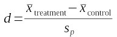

Experiments are the most reliable method of testing for cause and effect relationships between variables. In an experiment we manipulate a predictor variable and observe the resulting change in a response variable. If there is no cause and effect relationship between the variables, then changing the predictor is expected to produce no change in the response.
If there is a change in the response variable, we need to know that the only thing that could have caused the change is the predictor variable, and it takes a well-designed experiment to give us this certainty. A good experiment should do two things:
- It should enable us to detect real treatment effects, if they exist
- It should eliminate the possibility that we will conclude there is a cause and effect relationship between variables when there isn't one
We know that errors in statistical testing (i.e. Type I and Type II errors) can interfere with these experimental goals. However, aside from Type I or Type II statistical errors, we should design experiments in a way that allows us to reach reliable conclusions about the presence or absence of cause and effect relationships.
Designing an experiment to test for a cost of parasitism
Today we will work with a simulation of an experiment that tests for an effect of parasites on metabolic rate in mice. Intestinal parasites potentially compete for food with the host, but some also eat host intestinal tissue. It's expected that carrying a parasite load will impose a metabolic demand on the host, because mice would likely have to increase their metabolic rate to repair the damage to their intestines. Mice can be experimentally infected with intestinal parasites by feeding them a known number of parasite eggs, and we will work with three different experimentally-induced infection levels (high, medium, or low) as our treatment variable. The response variable for the experiment is the metabolic rate of the mice, which is measured by the rate of oxygen consumed by the animals.
As you learned in lecture, an "ideal" experiment would hold every variable constant except for parasite load. Certainly, every variable that affects metabolic rate should be held constant, but it may not be possible for everything to be exactly the same, and some variables that we think are not a problem might actually affect metabolic rate. For example, unless the mice are clones there will be genetic differences between individuals that may lead to variation in metabolic rate. If we don't have enough room in a single room to house all our mice we may have to split them between two or three rooms, and if there are differences in temperature, humidity, noise levels, or any number of possible environmental conditions, we might see some differences in metabolic rate due to those factors. We might suspect that things like age and sex may affect the weight of the animals, and weight definitely affects metabolic rate. Different strains of mice might differ in their energy needs as well. Holding these constant will give us nice clean results, but we might want to know if these characteristics of the mice actually do affect metabolic rate.
If we can't hold a variable constant, we at least need to be sure it isn't confounded with the variable we're interested in - if we made the mistake of using only young animals for high parasite loads and only old animals for low loads we could end up with a difference between high and low that is actually due to age rather than parasite load. If we can't hold age constant, the options available to avoid confounding is to either randomize with respect to age or to block on age. Randomizing means to randomly select animals for each parasite treatment group, so that a more or less equal number of individuals of every age are randomly assigned. Randomizing prevents confounding most of the time, but it doesn't guarantee a lack of confounding - by chance you could still end up with enough animals of the same age in a group to produce a spurious result. We also don't typically account for variables that are randomized in our analysis. The primary benefit of random assignment is that it works for variables we don't know about, and thus don't know to hold constant or otherwise account for.
The better option for variables like age, sex, or strain (i.e. white lab mice or wild mice) is to block on them. Blocking means to put an equal number of each animals from each treatment group into each age group. Doing this in your design guarantees that age can't be confounded with parasite treatment, because parasite and age are orthogonal in this design. Using a block design guarantees a lack of confounding even if you do not account for age in your analysis, but the real power of a block design is realized by including the blocked variable in your statistical analysis. Just like we statistically eliminated initial weight from an assessment of fat mass gain under different food intake levels, we can statistically eliminate age by including it in our GLM with parasite treatment.
In short, the best way to deal with nuisance variables is to:
- Hold them constant
- Randomize with respect to them
- Block on them
If we block on a variable, but randomly select which individuals to assign to each combination of age and parasite treatment, we have used a randomized complete block design. Blocking prevents confounding for the variable we know could be an issue (i.e. age), and randomization helps us with variables we do not even know to worry about.
Effect size
Before we move on to our simulated experiment, we should discuss another important aspect of our use of statistics to guide our science: effect size.
Effect size refers to the amount of difference in the response variable that is produced by the different treatment levels. A simple measure of effect size for a two-group experiment is the number of standard deviations between group means, which is known as "Cohen's d". To calculate it, you divide the amount of difference between two means by the pooled standard deviation:
You can think of Cohen's d as a signal to noise ratio, where the signal is the amount of response to treatment (measured by the difference between group means), and the noise is unexplained random variation in the data (measured by the "pooled" standard deviation). In general we would expect that it would be easier to detect a strong signal with little noise in the transmission. For example, if you're making a phone call, the signal would be the words that the person you called is saying, and noise would be static in the transmission. The best case, of course, is to have a nice loud, clear transmission with little or no static interference. But, if the signal is weak (quiet, faint words) you might still hear it if there is little or no static in the transmission, but even a little static will obscure a weak signal. If the signal is strong (loud, clear words) then a small amount of static in the transmission won't prevent you from hearing what the person is saying, and the signal is only obscured when the static is severe.
Difference between means (signal):
Standard deviation (noise):
The app to the right illustrates how effect size works for a two-group experiment. By default both the difference between means and the standard deviation are set to 4, so the effect size is 1. Effect sizes of 1 or over are generally considered large effects, so you are looking at a large difference between the means from a statistical perspective.
You can set the difference between means and the standard deviation to any values you want, and as long as they are set to the same number the effect size will be 1. Because of this you can't tell if an experimental treatment has been effective just by looking at the amount of difference between means - a difference between means or 4 or of 40 can represent the same effect size if the standard deviation is the same size as the difference between means. Since the pattern of distribution of the points doesn't change you may think the graph isn't changing, but watch the y-axis scale as you make changes to the app.
Effect sizes of 0.5 are considered to be moderately large. To see what a moderate effect size looks like set the difference to a value that is 1/2 the size of the standard deviation - for example, set the difference in means at 4 and set the standard deviation to 8. Even though the amount of difference is the same as the default value of 4 the extra variability makes the data values overlap more between the groups, which makes the difference between the means appear smaller.
To see a small effect set the difference to 4 and the standard deviation to 40 - this is a ratio of 0.1, which is considered a small effect size. The difference between means is the same as the large and moderate effect sizes you just looked at, but now with so much variability in the data the difference of 4 no longer looks very big at all.
Given what you know about how statistical testing is done, which effect size has the greatest chance of giving us a statistically significant result?
We can explore how effect size affects our ability to detect differences using a power curve, like the one below. Remember that statistical power is the probability of rejecting the null hypothesis when there is a real experimental treatment effect - that is, power is the probability of rejecting a false null hypothesis. The probability of making the mistake of not rejecting a false null hypothesis (otherwise known as a Type II statistical error) is called β, and power is thus the probability of not committing this error, which is thus equal to 1-β. Rejecting the null is how we statistically detect a treatment effect, so you can think of power as the probability of detecting a real treatment effect in an experiment.
The x-axis on the power curve is effect size, and you can see that power increases as the size of the effect increases, as expected - it's easy to detect a strong signal with little noise.
What about small effects? With this sample size there is less than a 5% chance of detecting a small effect of 0.1. We consider a large effect to be 1 standard deviation between means, and there is only a 55% chance of detecting an effect of this size with a sample size of 10, and power doesn't get above 0.8 until there is 1.34 standard deviations between means.
So, the first lesson is of the power curve is: small effects of a treatment may exist, but are very easy to miss.
But a sample size of 10 is not very large, and we would expect to have an easier time of detecting detecting small differences if our sample size increases. Double the sample size to 20 and see how the curve changes. You should see that:
- The power to detect a large effect of 1.0 is over 85%
- The power to detect a moderate effect of 0.5 is 33%
- The power to detect a small effect of 0.1 is still pretty low, at less than 5%
This means that the second lesson is: increasing sample size is helpful, particularly for larger effect sizes, but small effects are still difficult to detect.
A good rule of thumb for adequate power is that you would like to have an 80% or better chance of detecting an effect of a size you are interested in, which is equivalent to a probability of 0.8 of rejecting a false null. If we want to be able to detect a small effect of 0.1 standard deviations between means, what would the sample size have to be? Go ahead and increase the sample size until an effect size of 0.1 is at or above 0.8. It's a big number, what did you get? Click here to see.
Sample size (per group): Alpha level:
The third lesson is: it takes a massive amount of data to detect a small effect.
In addition to effect size and sample size, power is determined by the alpha level we use. Set the sample size back to 10, and try changing the alpha level instead. If we increase the alpha level to 0.1 we would be able to detect smaller differences, because we would consider p-values up to 0.1 to be significant. The problem with this approach to increasing power is that it comes at the cost of increased false positive errors - remember that the alpha level is our Type I error rate when the null hypothesis is true, and because of this we usually don't change the alpha level as a way of increasing power. The best way to increase power to detect an effect of a given size is to collect more data.
But, lesson three tells us that increasing sample size is not terribly practical when the effect sizes are small. We are much better off trying to work with large effect sizes, but how do we affect the size of an experimental treatment effect?
How do we affect effect size?
So far it appears that the only viable method of increasing power to detect an experimental treatment effect is to increase sample size, and this would be true if we were stuck with an effect size and had no ability to change it. But, in fact, there are design choices we can make that influence the effect size - if effect size is a signal to noise ratio, our choices for increasing this ratio are to either:
- Boost the signal: The size of response we can expect to get is set by the treatment levels - the bigger the dose of the treatment we use the bigger we can expect the difference between treatment and control to be. However, there are limits to how far you can push this - if you want your results to pertain to the real world you shouldn't use higher treatment levels than are likely to ever by found in nature. Additionally, the response to a treatment can change qualitatively if the dose is too high - the old saying that "the dose makes the poison" refers to the fact that even things that are good for us at low doses can become toxic at high doses. Increasing the treatment levels to the point that you over-dose and kill your subjects would not be a good idea.
- Reduce the noise: In our analogy to a signal to noise ratio, the noise is the random variation in our data. This means that one of the ways we can increase the effect size is by reducing the amount of unaccounted-for random variation in the response. Some of the random variation in data is unavoidable - individual differences can't be completely eliminated. However, we should take pains both to avoid introducing random variation into our measurements in the course of doing the experiment, and to measure and account for any sources of variation that we don't otherwise eliminate. In a linear model, the noise is residual variation, so we want to make the residual SS and residual MS as small as possible. We can (and should) reduce the noise in several ways.
- We should be careful in our measurements, because sloppiness adds to the random variation in our data.
- We should hold as many factors constant as possible to avoid adding unmeasured, uncontrolled variation to the data.
- We should block on factors that we can't (or don't want to) hold constant, and account for the blocks statistically in our analysis.
Notice the return of holding nuisance variables constant or blocking on them in this list - we were introduced to these as methods of avoiding spurious results from confounded variables, but they are also methods of minimizing random variation in the data that increase treatment effect sizes, and thus increase our statistical power. Note that randomly assigning subjects to treatment groups is not here in this list - it is essential for preventing confounding from variables we don't know about, or can't hold constant, but it does not eliminate statistical noise.
For today's exercise will look at how holding variables constant, randomizing them, or blocking on them affects our ability to detect treatment effects.
Today's exercise
We will be simulating an experiment that tests for a metabolic cost of parasitism. Parasite treatment is the only variable of scientific interest in this study, and will be included for you in every design, with the same number of mice in each treatment group. Because this is a simulation, I can tell you that the parasite groups do have a population-level difference in mean metabolic rate - high parasite treatment is 2 units above medium, and medium is 2 units above low. Because we know this to be the case, we also know that any time you do not get a statistically significant test of the effect of parasite you have experienced a Type II statistical error (failing to detect a real difference). The rate at which you do reject the null hypothesis for parasite is thus your statistical power to detect the effect - if 1 out of 50 repetitions of an experiment produce a statistically significant effect of treatment then power is 1/50 = 0.02, or a 2% chance of detecting the effect. If 49 out of 50 repetitions produce a statistically significant effect of treatment then power is 98%. We want power to be as high as possible.
You do not have the ability to change the overall sample size, or to change the experimental treatment (can't add or drop parasite treatment levels, or change the number of parasite eggs given for each level). However, there are a variety of nuisance variables that you need to decide how to contend with:
- Strain - you have access to white mice, and to a strain of wild house mouse.
- Sex - male or female.
- Age - the mice are bred in captivity, and are of known age. You have access to juveniles and adults.
- Observer - these experiments are labor intensive and time consuming, and you're too busy being an internationally famous scientist to do the experiment yourself. You have three different helpers (Fred, Mary, and Jane) available to collect data.
- Chamber - three different climate-controlled chambers are available for housing the mice.
I have written a web-based app that will do the experiments for you, which you can access here. Clicking on the link will open the app in a separate window, so you can work with it while you read the instructions.
You will see that on the left side of the app in a light gray box are the nuisance variables that you have to work with. You have three different ways of dealing with nuisances:
- Randomize them - checking no boxes for a nuisance factor causes it to be randomized. Subjects are selected randomly with respect to that variable. The levels selected will show up in the data table so you can see that they were randomized, but they are not used in the ANOVA.
- Hold them constant - checking a single box causes
all of the mice selected to be of that kind (checking "White" for the
strain causes only white mice to be used, for example).
- Block on them - checking two or more boxes causes each selected level to be included, and all possible combinations of blocks and treatment levels will be included in the analysis. Note that subjects are randomly assigned to the combinations to deal with variables we don't know about, but equal numbers of subjects are placed in each combination of levels for the blocking factor so that they will be orthogonal. Blocking on a variable causes it to be included in the ANOVA, and variation explained by the variable is assigned to its row in the table, instead of remaining as unexplained variation in the Residual SS.
Note that random assignment of individuals to treatment groups is always done, even for variables that are blocked or held constant - if you are using white, adult, female mice then randomly selecting from among the available white, adult, female mice to assign to each parasite treatment group is a good idea.
The designs:
To see how the design choices you make affect the experimental results you obtain, you will compare several different experimental designs. The app will always include the treatment variable (parasite level) as a predictor, and metabolic rate is always the response variable. The designs will differ in how you treat the nuisance variables.
All nuisances randomized
1. Run an experiment in which none of the nuisance levels are checked - this is how the experiment is set up initially, with no check boxes checked. When you click the "Run experiment" button you'll see that the data set always has an even number of High, Medium, and Low parasite treatments, but the levels for observer, strain, sex, chamber, and age are all assigned at random. Pay attention to:
- Graph: how much scatter is there in the metabolic rates (vertical scatter in the red dots for each group)? How much variation is there in the means? How big are the confidence interval bars?
- ANOVA table: make note of
- Total SS - this is a measure of the total amount of variation in the metabolic rate data. With so many variables being allowed to vary at random this will be large.
- Treatment SS - this is a measure of the variation in metabolic rate that is accounted for by differences in parasite treatment. It will be a small fraction of the total.
- Residual SS - this is the measure of unexplained, random variation in the data. It is due both to the truly unpredictable variation in metabolic rate, and to the variation due to all of the nuisance variables we know about, but have chosen to allow to vary at random. When we don't include a predictor in a model all of the variation in the response that it's responsible for goes into the residual SS.
- F ratio and p-value - the F ratio is the MStreatment/MSresidual, and will be big if the amount of explained variation is big compared to the amount of unexplained, random variation. If F if big enough p will be less than 0.05 (the cell with the p-value will turn red if it is less than 0.05).
- Partial η2 (eta squared) - this is a measure of effect size that is appropriate for ANOVA designs with more than two groups (the d statistic is problematic with more than two groups). It measures the proportion of the treatment + residual SS that is accounted for by the treatment. It's equal to r2 when there is only one predictor, because Total SS = Treatment SS + Residual SS, and r2 is Treatment SS / Total SS, but when there is more than one predictor it is not equal to the multiple R2. An η2 of 0.02 is considered small, of 0.13 is moderate, and 0.26 or larger is considered large. Note whether the effect size is small, moderate, or large for this design.
Randomizing is expected to avoid confounding between the nuisance variables and the parasite treatment variable, but it doesn't reduce the amount of random, unexplained variation in the data. Since this design leaves the greatest possible amount of unexplained, random variation in the data it should have the lowest statistical power - the p-value may not be significant in this initial run.
2. Click "Run experiment" to repeat the experiment 50 times. Each time you run it, note any major changes you see in the appearance of the graph (for example, are the means always in the order small, medium, large, or do they change order sometimes?). Also watch for big changes in the ANOVA table, and any tendency for the effect size measure to change by large amounts.
Record how many of your 50 runs had p-values less than 0.05 (remember, this number divided by 50 is your statistical power).
All nuisances constant - the Experimental Ideal
1. Next use a design in which you hold all of the nuisance variables constant (you can pick which levels to check, but only check one level per nuisance variable).
Clicking "Run experiment" you will get a data set with columns for each nuisance showing the level you selected, a column for the treatment groups, and one for metabolic rate. All three of the treatment levels are still being used, but only the levels you checked show up in the data set for all of the nuisance variables. The ANOVA table will still only have Treatment as a variable - we need at least two different levels to include a predictor in our analysis, so none of the predictors are included in the model.
Holding all the nuisance variables constant should produce the most consistent data with the smallest amount of variation. Note the following:
- Graph: the data values should be much less variable, because you are only using a single strain, sex, age, chamber, and observer. Differences in metabolic rate between strains, sexes, ages, chambers, and observers is simply eliminated from the data set, resulting in a much more consistent set of measurements. The confidence intervals around the means should also be much less, because the smaller amount of individual variation in the data leads to a residual MS, which is used as the measure of variance for the confidence intervals. Smaller residual MS leads to smaller confidence intervals.
- ANOVA table: you should see that -
- The Total SS should be much smaller, since the data are less variable.
- The treatment SS should be roughly the same size as before, since the treatment effect is unchanged
- The Residual SS should be much smaller - without the contribution of our nuisance variables only the truly unpredictable random variation among individuals is left in the residual term, and it should thus be smaller
- The F ratio should be bigger, and the p-value should be less than 0.05 most of the time. With a smaller residual SS the residual MS will be smaller, which will make F bigger and p smaller
- The effect size (partial η2) should be larger, because the treatment SS will be a much larger fraction of the total variation now that most of the random variation has been eliminated.
2. Repeat the experiment 50 times, and make note of the same things that you did for step 2 of your "everything randomized" model. Record the number of runs that were statistically significant. Since this design allows for the least amount of random variation, and has the largest possible residual degrees of freedom, this design should give you the highest power.
3. Change which level you're holding constant for each of the nuisances one at a time and see what happens to the graph. Make note of whether the order of the means stays the same (Low < Medium < High) as you change the levels you use.
Blocked on everything possible
1. With 16 mice per group, with 3 treatment groups, you have 48 mice in the experiment. There are 3 treatments, 2 strains, 2 sexes, 2 ages, 3 chambers, and 3 observers, for 3x2x2x2x3x3 = 216 possible combinations of all the levels of every variable. You have to include the 3 treatment groups, so you can at most block four of the five nuisances with 2 levels each (that is, 3x2x2x2x2 = 48).
Make this design by checking both boxes for strain, sex, and age, checking two of the chambers, and only one of the observers (observer will be held constant). The data set will show each of the blocked factors appearing in all possible combinations, with a single row for each combination of the variables.
Make note of the following:
- Graph: because we are allowing mice of both strains, both sexes, both ages, and two of the three chambers into the experiment, the variability in the data is big again. However, we are accounting for the variation added by these four nuisance variables, so the confidence intervals on the means is still small.
- ANOVA table: you should see that -
- Each of the nuisance variables we blocked is included in the table.
- Total SS - should be similar to the design in which all of these variables were allowed to vary at random, because we are again allowing most of the nuisance variables to contribute to variation in metabolic rate.
- Treatment SS - should be very similar to the other models. The nuisance variables are blocked, which means they are independent of the Treatment effect, and we should get fairly consistent measures of variation explained by Treatment.
- SS for each of the blocks - we now have a line for each of the blocked factors. To the extent that a block effect causes variation in metabolic rate the SS will be greater than 0, and some may be bigger than the treatment SS (we might expect differences in metabolic rate for different strains, sexes, and ages of mice that could be as big an effect, or possibly bigger effects, than the parasite treatment effect).
- Residual SS - should be as small as for the model in which all of the nuisance variables were held constant.
- F and p - should be similar to the model in which all nuisances were held constant, because the residual SS is low.
- Effect size (partial η2) should be approximately the same size as the hold everything constant model, because the residual SS is small, and the treatment SS should be unchanged.
Note that not all block effects will always be significant. The degrees of freedom for each block effect is taken out of the residual df, which reduces power (MSresidual is SSresidual/dfresidual, so making dfresidual smaller increases the size of the MSresidual). Including a block effect with a small SS will not justify this loss of dfresidual, and may not justify inclusion in the model.
2. Repeat the experiment 50 times, and make note of the same things that you did for step 2 of your "everything randomized" model. There will be more variation in the data than you got by holding everything constant, but variation due to the factors you blocked on is being accounted for. Power should be close to what you got by holding everything constant - you lose some residual degrees of freedom by including your blocks in your analysis, but to the extent that the blocks really do affect the response it helps to account for them.
Your choice - combination of holding variables constant, randomizing, and blocking
1. This time design an experiment to try to make the residual SS and residual MS as small as possible. You are required to use at least two observers (it's too much work to do the experiment yourself) and need to use at least two growth chambers (not enough room in one), but aside from those constraints you can try any combination of holding variables constant, randomizing, and blocking until you get a model that gives you the smallest possible residual SS.
In general, it helps you to include a block if the blocks actually have different means - if they don't, then including them doesn't explain much of the variation in the data, and reduces residual degrees of freedom, which can reduce your power.
2. Repeat the experiment 50 times, and record the same observations as you did for the other designs.
The report
To summarize what you've learned, write a short report (1-2 pages) that explains how the different designs performed. For the all constant vs. all random designs, explain why you got better results by holding all of the nuisance variable constant. What happens to the effect size for parasite (as indicated by partial η2) when you allow everything to vary at random, compared to when you hold everything constant (and why? Since the amount of difference between the parasite groups is always the same at the population level, what can cause effect size to change)? What happens to the variation added by randomly selecting strains, sexes, ages, observers, and chambers (i.e. where do the SS added to the data from these factors go)? Explain why blocking on everything you could gave you results that were like the hold constant model, even though the total SS was large like the everything random model.
For your own design, tell me how well it worked. Be sure to address the following:
- How did you deal with each source of nuisance variation? Which ones did you hold constant, which did you randomly allocate to treatment levels, and which did you measure and account for statistically?
- How often did you detect a parasite effect, compared with the other three designs?
- Why might you want to block on a factor instead of holding it constant (for example, do you learn anything from a significant block effect)? Which of the factors you blocked on were consistently significant?
- You should have noticed that effect size was highly variable when you allowed all of the nuisance variables to vary at random. When you held all of the nuisances constant, or blocked on four of the five of them, the effect sizes were much more consistent. What does this tell you about what we can know about effect size from our data? How consistent were the estimates of effect size for your own design?
- Calculate the power for each of the designs you reported on here (number of times you get a significant effect of parasite divided by 50). Which design had the greatest power?
When you are done, upload your report to the course web site. Due in one week, 10/16 at the beginning of class.